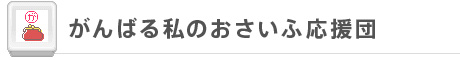
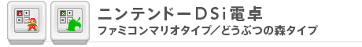
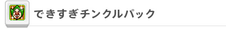

DSiウェアには、電卓や家計簿を記録する機能を持ったものもあります。DSiならではのタッチペンを使った簡単な操作で、外出先で合間の時間に毎月の支出管理をしたり、食事の割り勘の際など急ぎの計算にも役立てることができます。

DSiで手軽に家計簿
お買い物などをした後のちょっとした時間に、タッチペンを使って何にいくら使ったかを入力して保存しておける、DSiを使った家計簿ソフトです。支出の集計などの計算は自動で行ってくれるので、あらかじめ設定しておいた予算と見比べれば、ムダな支出もすぐに見つかります。これで、簡単に1ヶ月ごとのおさいふ管理ができるようになるでしょう。
家計簿の内容を保存できるのは25ヶ月間ですが、この期間を過ぎる前に、パソコンの表計算ソフトなどで扱えるCSV形式のファイルとして、SDメモリーカードにデータを書き出すことができるようになっています。この機能を活用して定期的にデータをパソコンに移動すれば、より長期間の支出管理も行えます。
仕事やゲーム、外出先でのちょっとした合間の時間を、家計簿管理に有効活用してはいかがでしょうか。
©2009 Nintendo / syn Sophia

必要十分な機能にプラスα
タッチペンを使ってDSiを電卓として使えるようになるソフトです。たし算・ひき算・かけ算・わり算といった通常の電卓と同様の四則計算だけでなく、長さ・重さ・体積・時間・面積・速さ・温度などの単位を変換してくれる機能も搭載しています。また、ネコやイヌなどの動物の年齢が、人間で言うと何歳に相当するかといったユニークな単位変換も可能です。
ニンテンドーDSi電卓には、ファミコン版『スーパーマリオブラザーズ』をモチーフに、計算するとマリオやルイージがジャンプする「ファミコンマリオタイプ」と、『どうぶつの森』をモチーフに、数字のボタンをタッチした際に「どうぶつ語」で読み上げてくれる「どうぶつの森タイプ」の2種類があります。無機質で機械的な作業になりがちな計算の作業の最中に、おなじみのキャラクターたちが目や耳を楽しませてくれるでしょう。
©2009 Nintendo

飲み会やパーティに便利な幹事電卓を搭載
『ゼルダの伝説』シリーズや、ニンテンドーDS用ソフト『もぎたてチンクルのばら色ルッピーランド』と『いろづきチンクルの恋のバルーントリップ』でもおなじみ、チンクルが発明したお役立ち（？）ツールを利用できるソフトです。
ツールは、電卓とタイマーに、チコのタロット占い、チンクルが音に合わせて踊る「チンクルダンサー」、コインをめくってアタリとハズレを競う「チンクルめくり」の合わせて5種類があります。どのツールも一癖も二癖もあるものばかりですが、特に「チンクル電卓」の中の、通常の電卓機能に加えて搭載されている「幹事電卓」の機能は便利です。
これは割り勘の計算を行ってくれる機能ですが、単純な割り勘だけでなく、支払いの比率を男女で変えるといった複雑な計算を簡単に行うことができます。食事やパーティなどの際に幹事を任された方にはうってつけの機能と言えるでしょう。
©2009 Nintendo